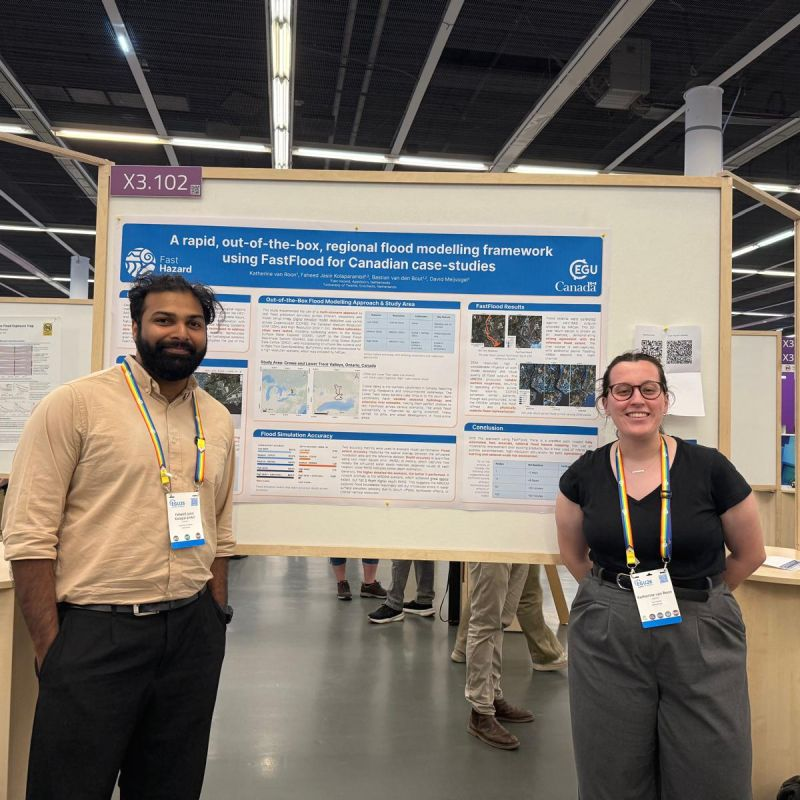
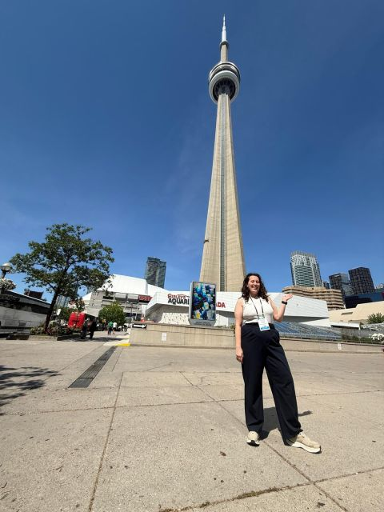
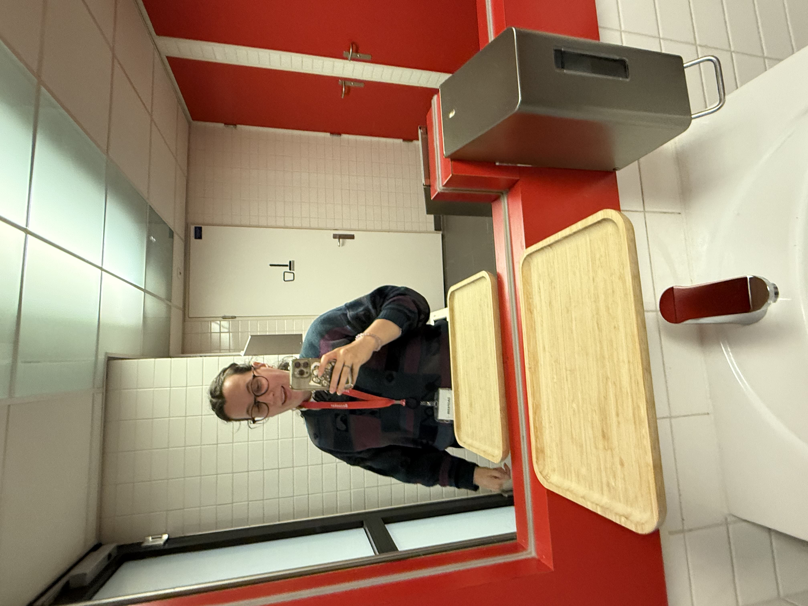
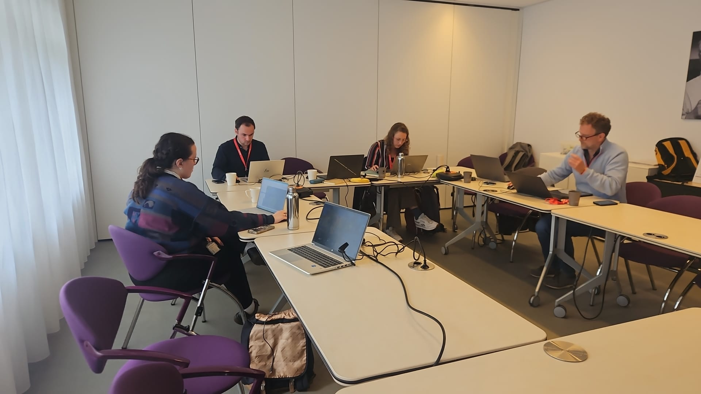

Updates
Notes on what I've been working on: conferences, launches, reflections, and
things I'm learning as I go.
August 2026
Headed back to Dutch class
DutchLanguage LearningPersonal
Exciting news — I'm headed back to Dutch class!
I've taken a variety of Dutch courses over the past decade, but I've never been able to devote the time and energy to keeping up with what I've learned and actually following through. I'm excited to say I finally have the time to do so. Starting at the beginning of September, just a few weeks from now, I'll be heading back to night classes, working toward B2 by the end of 2026 or early 2027.
This means a lot to me. As a Dutch citizen with a Dutch parent and extended family, it's always been a point of guilt and shame that I'm not able to fully communicate in Dutch. I understand most of what's happening around me, but I really lack the confidence to express myself. I spoke some Dutch with my grandparents growing up, of course, but I'm looking forward to finally moving past "kinder Nederlands."
Tot de volgende keer!
July 2026
Two conferences, two continents
EGUISPRSFastFloodRemote Sensing


This year brought two conference opportunities that I'm genuinely grateful for, and that pushed my thinking in different directions.
The first was the European Geosciences Union General Assembly in Vienna — an incredible week of sessions, conversations, and ideas. Beyond attending, I had the opportunity to present work I've been developing at Fast Hazard: a data-agnostic approach to applying the FastFlood model that is designed to perform reliably anywhere in the world, including in data-sparse environments. The approach prioritises speed and accuracy while remaining scalable and reproducible across diverse hydrological contexts. The poster I presented explored how this methodology was applied to case study locations across Canada under various input scenarios, and discussed its potential for operational early warning and national-scale risk assessment.
Later in the year, I attended the ISPRS symposium in Toronto. We were invited to organise a tutorial on the FastFlood tool — which I was responsible for creating. I designed a session that introduced the tool, explained the underlying methodology, and walked participants through common applications in a hands-on way. Accessibility and clarity were front of mind throughout: the goal was for practitioners with varying levels of technical background to leave with something useable.
What I appreciated most about ISPRS was the perspective shift it offered. The conference approached the work I do from a strictly remote sensing angle — less the intersection of hazard and vulnerability that I usually navigate, and more the data and sensing side of the pipeline. I came away with concrete ideas about what we might be able to integrate into the FastFlood Global tool, and how to improve some of our internal workflows. A productive week in every sense.
June 2026
DRRS Flood Day in Utrecht
DRRSTeamAnticipatory Action


I had the wonderful opportunity to tag along to the DRRS Flood day at the RVO office in Utrecht in June. Not only was this my first time meeting the members of the DRRS Flood team in person, but it was also my first time serving as an expert on my own within the team.
The day served as a kind of test to prepare for the upcoming hurricane season this autumn, where El Niño is expected to throw some interesting weather conditions into an already very extreme year. We walked through some past activation cases and tried to complete the tasks in the least amount of time, all of us acting as experts in our own part of the project.
Not only was it lovely to meet everyone in person and get to work together directly, but it was an amazing opportunity to be involved in the team. What an honor it was to serve as a flood expert for my national government, in hopes of helping those at risk of flooding across the globe!
March 2026
One year at Fast Hazard
Fast HazardReflectionConsultancy
A year in, and it's been a genuinely formative one.
My title is officially Climate Hazard Consultant and Programmer, but working at a small company means that description covers a lot of ground. The technical core of my work — specialised flood modelling, hazard assessments, and exposure analysis using the FastFlood CLI — is something I've refined into a solid internal workflow. I feel confident in these deliverables now in a way I didn't at the start.
What surprised me most was how much I've grown on the non-technical side. I've had the opportunity to lead projects — not just contribute to them — which meant being responsible for both the team and the client relationship. Most client interactions have been positive and genuinely collaborative, but there were moments that tested my patience, and a few where I needed to be firm: re-negotiating scope, holding to contract terms, or pushing back constructively on requests that fell outside what was agreed. Those were uncomfortable moments at the time, but they've been some of the most valuable experiences for building confidence in professional settings.
I also got hands-on with the business development side of consultancy — Request for Proposal (RFP) preparation and Contract Change Notice (CCN) submissions. This is knowledge I couldn't have picked up on my own or at a larger organisation where these functions are siloed. Having visibility into how a small consultancy actually operates has been one of the unexpected highlights of this role.
Looking ahead, I'm taking on more responsibility for internal documentation and organisational processes — making sure our workflows are clearly recorded, which also supports longer-term goals like ISO security certification. I'm also looking forward to getting deeper into the FastFlood API. More technical, more infrastructure-level work — which feels like the right next stretch.
January 2026
First DRRS activation
DRRSMozambiqueEmergency Response
January brought a lot of crazy challenge to work! My team has the pleasure of being a part of the Dutch Disaster Risk Reduction and Surge Support (DRRS) programme, which is available 24/7 as an emergency contact for near-real-time flood impact assessments, and this month brought my first activation.
We were contacted by the United Nations Disaster Assessment and Coordination team (UNDAC) to do emergency flood predictions and exposure calculations for parts of Mozambique that were at risk due to prolonged and intense rainfall. That led to a rather chaotic but productive afternoon video calling with members of the team across the Netherlands, working to get some useful preliminary results. You can read more about the wider collaboration behind this kind of response here.
We were thankfully able to wrap things up for the weekend, only a few hours later than a regular work day would have ended, but it was super exciting to be a part of such an activation. It was a great test for my spatial analysis skills, and a strange, new experience to work under such intense conditions.
I am so glad to have opportunities that bring my lowly analyst work so close to impact and direct disaster risk reduction and anticipatory action.
November 2025
FastFlood Global goes live
FastFloodTool DesignLaunch
After months of work, the FastFlood Global tool is live — and it's genuinely exciting to see it out in the world.
I was involved from the early design and brainstorming stages through to implementation and testing, which made this a rewarding project to see through end-to-end. There were some genuinely tricky technical problems to solve along the way, but working through those iteratively — trying things, seeing what broke, integrating user feedback, and going around the loop again — is exactly the kind of process I find energising. The full methodology is written up in our whitepaper, for anyone who wants the technical detail.
One of the parts I'm most proud of is the tutorial material I designed for the tool. This matters to me because accessibility is something I care about deeply — not just as a principle, but as a design constraint. If a tool for anticipatory action is only useable by a narrow technical audience, it isn't really serving its purpose. The goal was to make FastFlood Global genuinely approachable for practitioners across a range of backgrounds and contexts, so that communities and decision-makers anywhere in the world can use it to support informed, timely action before a flood event.
This launch felt like a real milestone — both for the team and personally. The launch also picked up some nice press — University of Twente covered it here. More to come.